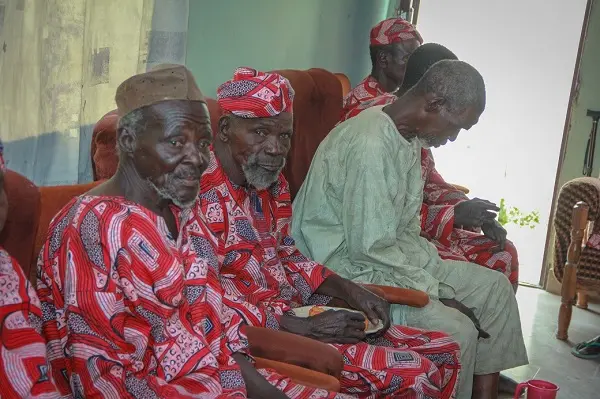

This world is a beautiful but temporary place, and with age, the future becomes more uncertain. Our elders have lived through different challenges and have coped with all that life has thrown at them. While there is the extended family and community support, times are hard and there is limited to non-existed Care Centre in Nigeria as a whole and less chances of having such in smaller towns and villages. Sasilka Empowerment Initiative has been blessed with a good heart and a passion to support and give. This is her way of giving back to the community. Sasilka Day Centre is intended as a free continuous, flowing, and on-going charity in memory of the Zakama and Amina Herman Pilasar.
